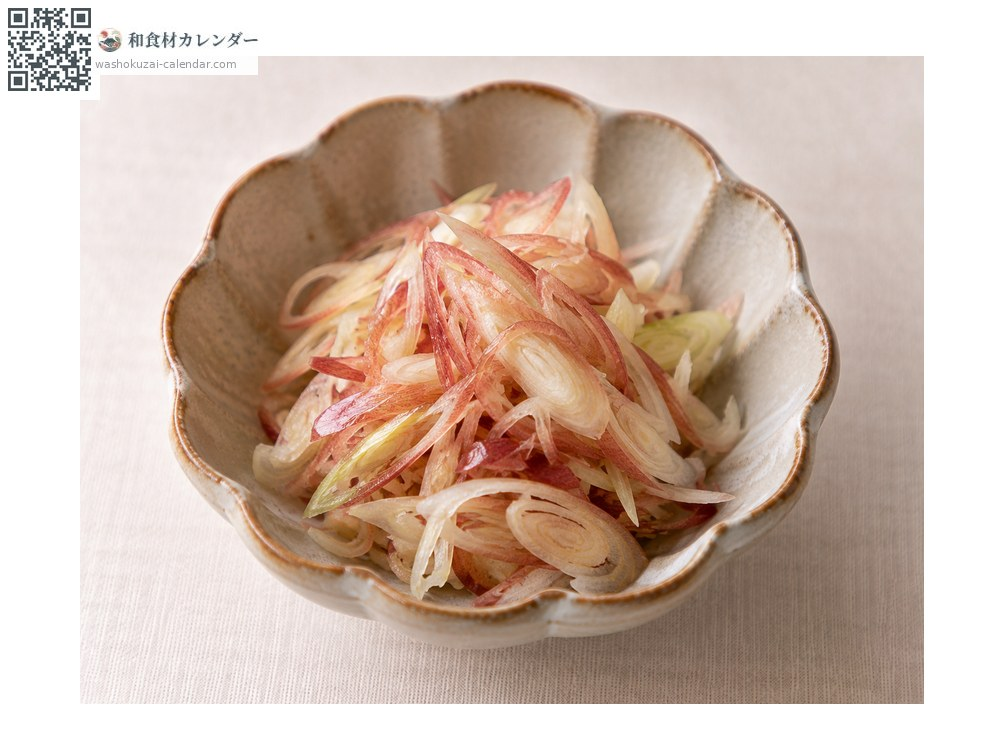
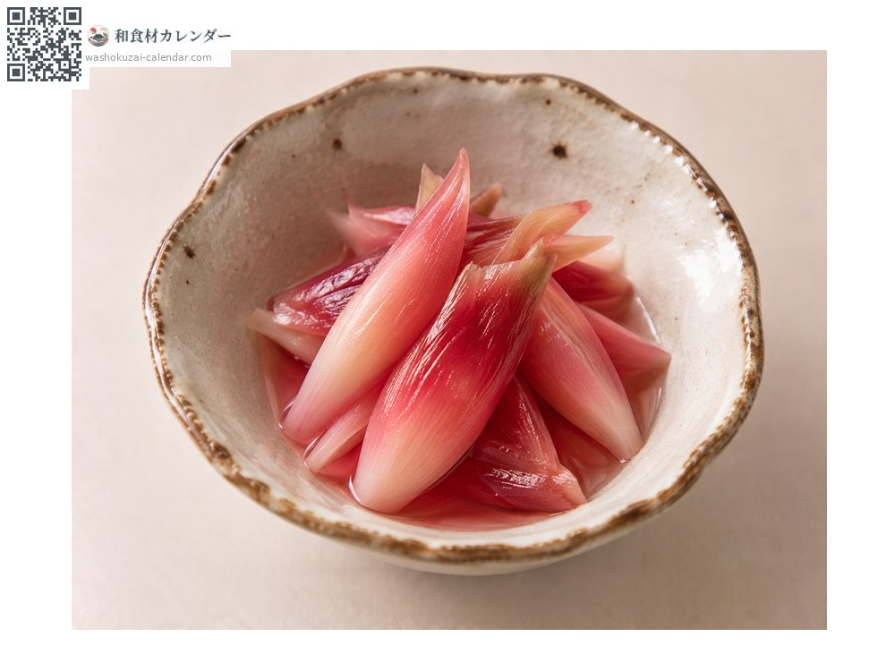
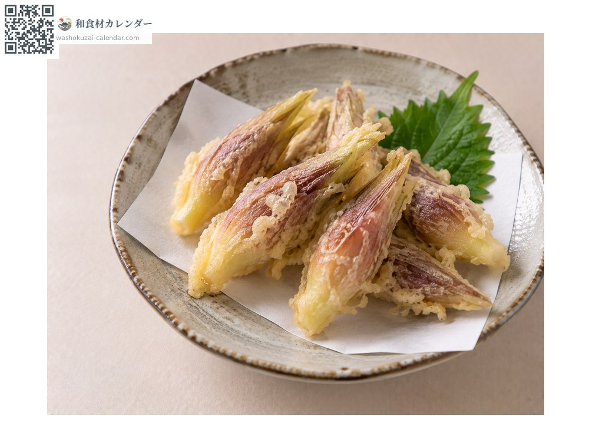
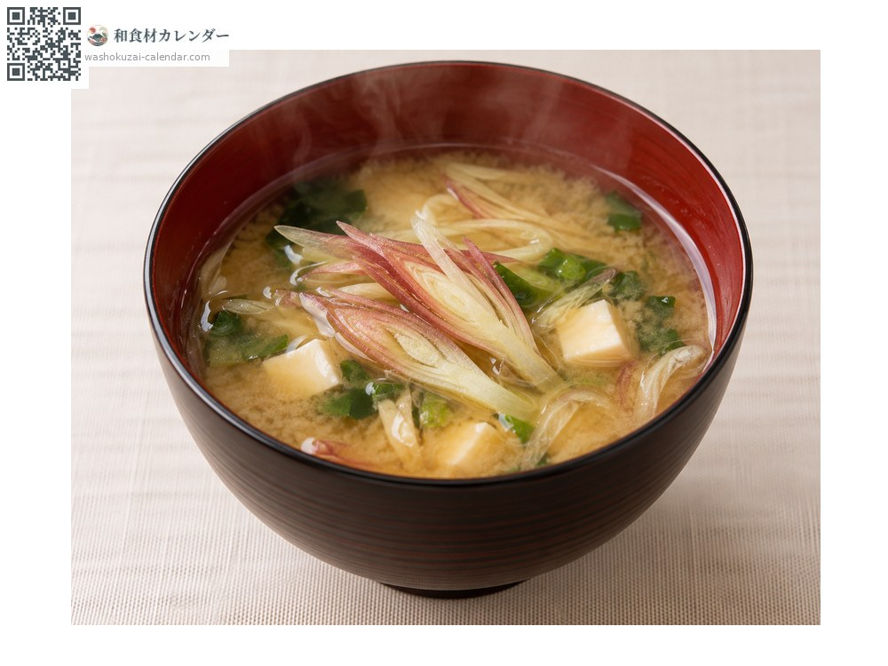

Vegetables
Myoga ginger
ミョウガ みょうが myoga
Also known asmyoga, myouga
At its best in Jul, Aug, Sep

When it is at its best
Jan
Feb
Mar
Apr
May
Jun
Jul
Aug
Sep
Oct
Nov
Dec
In seasonAvailable
How to cook

As a garnish
Chopped over chilled tofu or somen.

Pickled in sweet vinegar
Turns a vivid pink.

Tempura
Fried whole.

Miso soup
Added for its aroma.
How to choose
Plump and rounded with vivid colour, and tips not yet opening.
Storage
Sensitive to drying. Wrap in damp kitchen paper, seal and refrigerate.
Main areas
Good to know
The part eaten is the flower bud. Kochi produces most of the national crop.
At their best around the same time
 Lettuce
Lettuce Bok choy
Bok choy Malabar spinach
Malabar spinach Shiso
Shiso Shiso flower spike
Shiso flower spike Shiso seed spike
Shiso seed spike Sansho peppercorn
Sansho peppercorn Edible maple leaf
Edible maple leaf